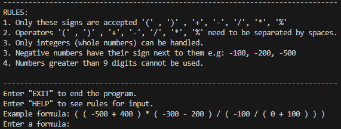

Postfix notation calculator
August 2024Infix to postfix notation calculator. This uses a stack to calculate expressions more efficiently than a normal calculator. Using string streams allows the calculator to take in numbers of any length (as long as they do not surpass the integer limit of 2 billion).
What I learned- String streams.
- Stack operations.
- String operations.
- C++ has GUI libraries, maybe I will update this in the future to have an interface.
